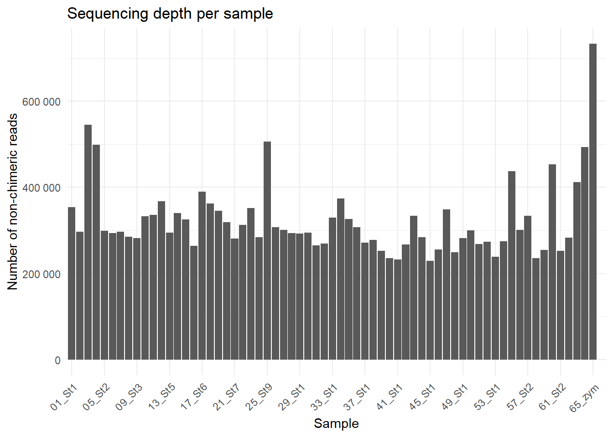
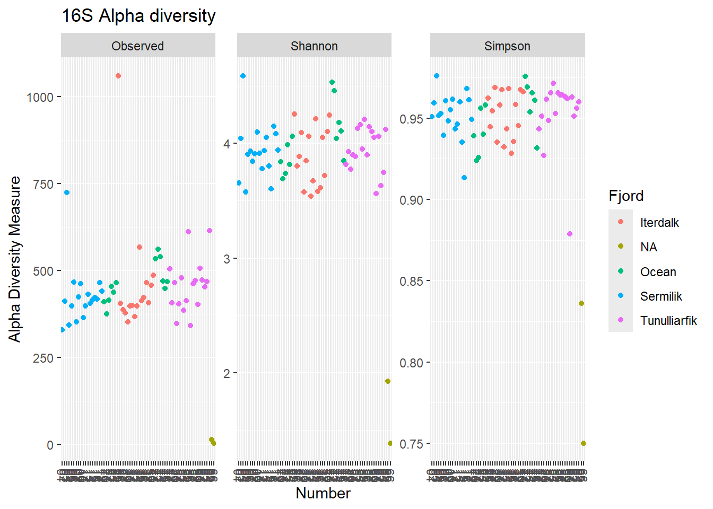
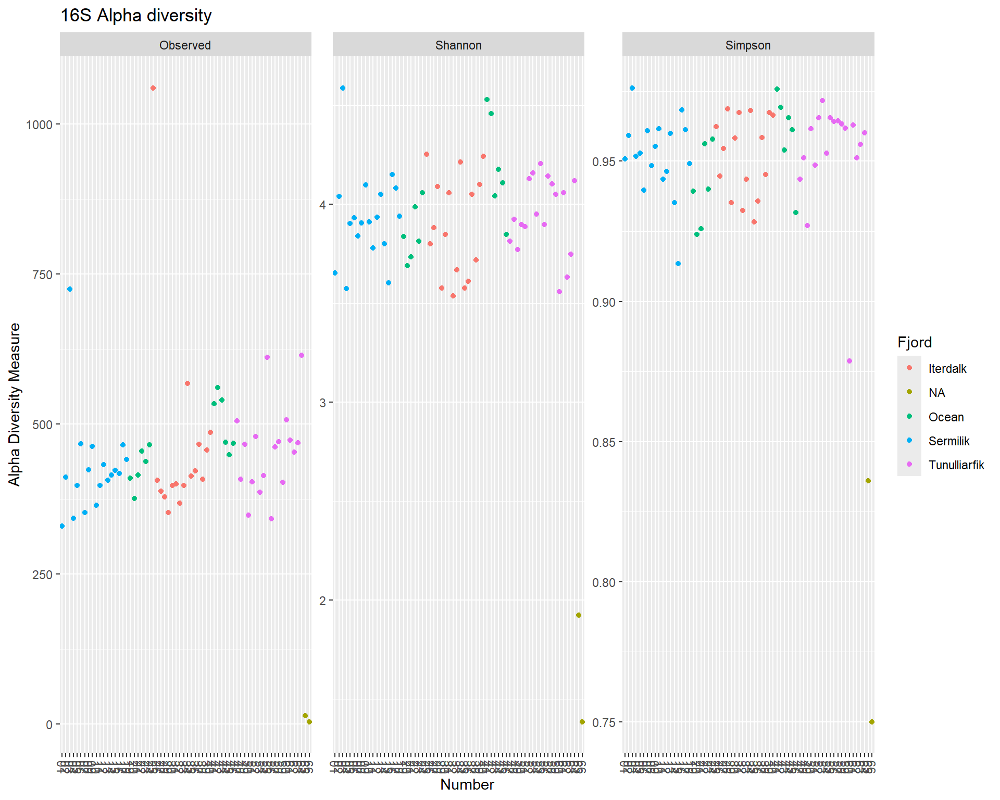
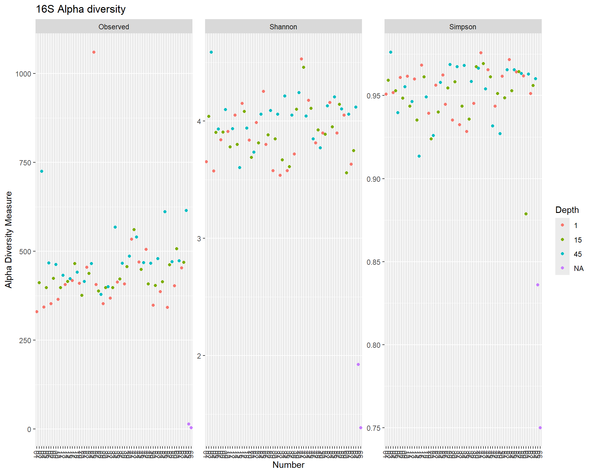
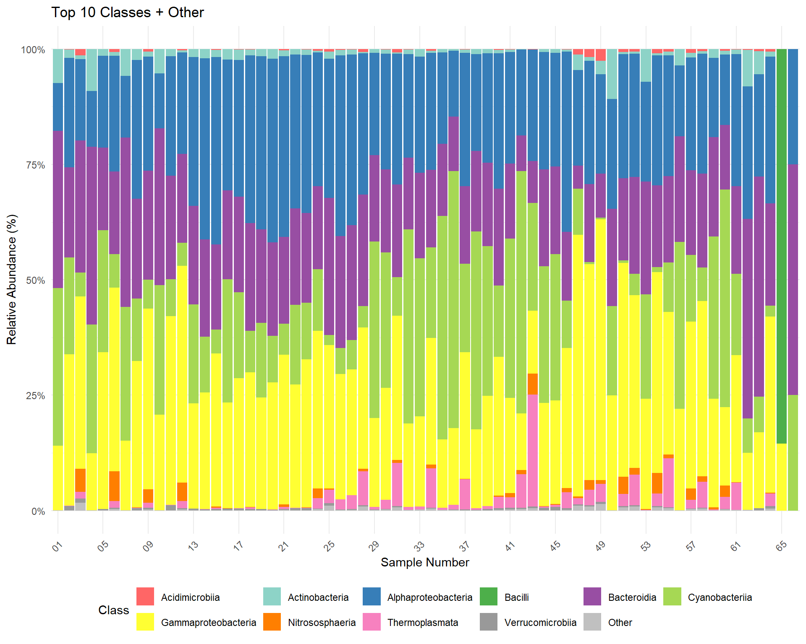
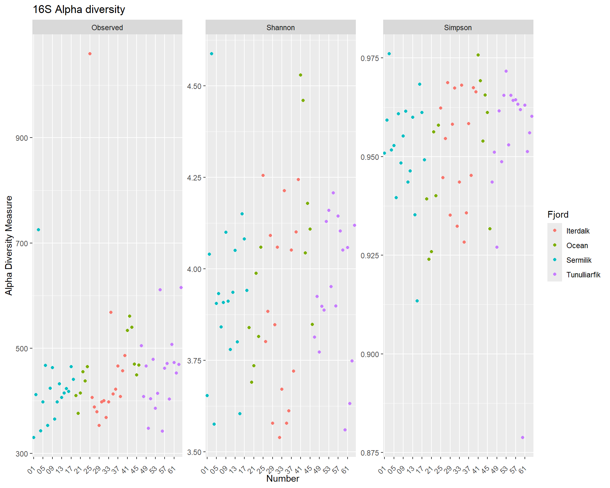
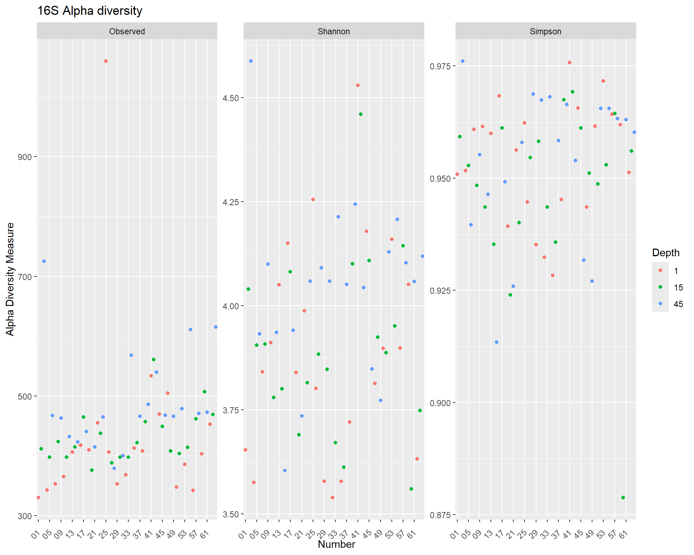
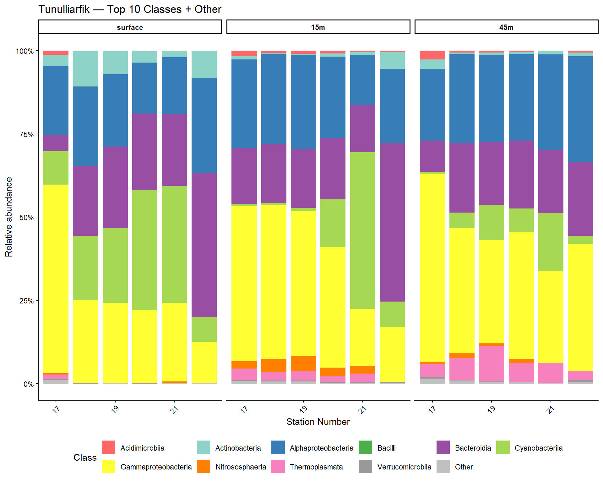

| sample | input | filtered | nonchim | reads_retained (%) | input | filtered | nonchim | reads_retained (%) |
|---|---|---|---|---|---|---|---|---|
| 01_St1_D1 | 371138 | 366327 | 353816 | 95.3 | 167938 | 162000 | 159233 | 94.8 |
| 02_St1_D15 | 316995 | 309348 | 296421 | 93.5 | 295467 | 291433 | 278278 | 94.2 |
| 03_St1_D45 | 601692 | 571131 | 545236 | 90.6 | 609184 | 601806 | 559695 | 91.9 |
| 04_St2_D1 | 525979 | 518763 | 499379 | 94.9 | 206261 | 203128 | 195165 | 94.6 |
| 05_St2_D15 | 316303 | 311817 | 298475 | 94.4 | 396497 | 391525 | 377723 | 95.3 |
| 06_St2_D45 | 318879 | 309866 | 293311 | 92.0 | 245246 | 240807 | 224000 | 91.3 |
| 07_St3_D1 | 312747 | 308853 | 297158 | 95.0 | 310313 | 306633 | 300024 | 96.7 |
| 08_St3_D15 | 307648 | 300419 | 285087 | 92.7 | 336656 | 331936 | 318824 | 94.7 |
| 09_St3_D45 | 306492 | 296619 | 281668 | 91.9 | 255214 | 251838 | 239046 | 93.7 |
| 10_St4_D1 | 351913 | 347298 | 332362 | 94.4 | 156296 | 154144 | 149421 | 95.6 |
| 11_St4_D15 | 359547 | 352804 | 335602 | 93.3 | 272353 | 268199 | 254758 | 93.5 |
| 12_St4_D45 | 396421 | 388578 | 368041 | 92.8 | 131145 | 119740 | 111963 | 85.4 |
| 13_St5_D1 | 313115 | 308863 | 294759 | 94.1 | 209978 | 207268 | 196396 | 93.5 |
| 14_St5_D15 | 363162 | 356701 | 340086 | 93.6 | 266658 | 262190 | 246231 | 92.3 |
| 15_St5_D45 | 353221 | 343088 | 325185 | 92.1 | 287883 | 282183 | 268270 | 93.2 |
| 16_St6_D1 | 281201 | 276415 | 263685 | 93.8 | 299018 | 295138 | 283053 | 94.7 |
| 17_St6_D15 | 418191 | 409711 | 390284 | 93.3 | 436923 | 431363 | 410669 | 94.0 |
| 18_St6_D45 | 390099 | 381026 | 362714 | 93.0 | 345555 | 340880 | 323699 | 93.7 |
| 19_St7_D1 | 366273 | 361555 | 345740 | 94.4 | 381206 | 376388 | 362822 | 95.2 |
| 20_St7_D15 | 339963 | 334859 | 319188 | 93.9 | 325792 | 321763 | 306259 | 94.0 |
| 21_St7_D45 | 303950 | 296456 | 281284 | 92.5 | 409185 | 404099 | 383025 | 93.6 |
| 22_St8_D1 | 337705 | 330947 | 313202 | 92.7 | 639562 | 629734 | 595924 | 93.2 |
| 23_St8_D15 | 381839 | 372339 | 351570 | 92.1 | 236665 | 232029 | 219931 | 92.9 |
| 24_St8_D45 | 312275 | 301121 | 283750 | 90.9 | 272500 | 269086 | 257062 | 94.3 |
| 25_St9_D1 | 570511 | 548862 | 505843 | 88.7 | 541371 | 531618 | 511224 | 94.4 |
| 26_St10_D1 | 330685 | 322847 | 307372 | 93.0 | 174926 | 162482 | 157631 | 90.1 |
| 27_St10_D15 | 322474 | 314221 | 301091 | 93.4 | 137799 | 135124 | 130155 | 94.5 |
| 28_St10_D45 | 339917 | 306163 | 293472 | 86.3 | 172580 | 159109 | 146316 | 84.8 |
| 29_St11_D1 | 309975 | 304049 | 292086 | 94.2 | 172797 | 166203 | 160229 | 92.7 |
| 30_St11_D15 | 312887 | 306906 | 294584 | 94.2 | 421599 | 411127 | 396091 | 93.9 |
| 31_St11_D45 | 302479 | 276764 | 264647 | 87.5 | 551092 | 543692 | 502491 | 91.2 |
| 32_St12_D1 | 285768 | 280376 | 268860 | 94.1 | 160307 | 156472 | 150840 | 94.1 |
| 33_St12_D15 | 348047 | 341695 | 329331 | 94.6 | 225107 | 214643 | 206903 | 91.9 |
| 34_St12_D45 | 411151 | 393009 | 373914 | 90.9 | 445400 | 439714 | 417667 | 93.8 |
| 35_St13_D1 | 345768 | 340103 | 326603 | 94.5 | 499025 | 489571 | 475932 | 95.4 |
| 36_St13_D15 | 326297 | 321443 | 307320 | 94.2 | 431806 | 420203 | 406171 | 94.1 |
| 37_St13_D45 | 293801 | 286753 | 271720 | 92.5 | 488607 | 482434 | 460966 | 94.3 |
| 38_St14_D1 | 295662 | 291354 | 277606 | 93.9 | 162211 | 151456 | 148185 | 91.4 |
| 39_St14_D15 | 270543 | 266086 | 252745 | 93.4 | 291125 | 286535 | 279893 | 96.1 |
| 40_St14_D45 | 261030 | 250345 | 235770 | 90.3 | 407753 | 402758 | 383059 | 93.9 |
| 41_St15_D1 | 257633 | 249163 | 232092 | 90.1 | 342396 | 337856 | 326723 | 95.4 |
| 42_St15_D15 | 297484 | 291861 | 267460 | 89.9 | 524160 | 514985 | 496136 | 94.7 |
| 43_St15_D45 | 368888 | 359510 | 333555 | 90.4 | 516809 | 510256 | 485442 | 93.9 |
| 44_St16_D1 | 304487 | 298356 | 284000 | 93.3 | 352920 | 348374 | 337105 | 95.5 |
| 45_St16_D15 | 248385 | 241428 | 229614 | 92.4 | 349554 | 346045 | 335266 | 95.9 |
| 46_St16_D45 | 281040 | 271667 | 255616 | 91.0 | 434181 | 428574 | 408374 | 94.1 |
| 47_St17_D1 | 393548 | 367729 | 348606 | 88.6 | 382400 | 376241 | 363386 | 95.0 |
| 48_St17_D15 | 287314 | 263887 | 249625 | 86.9 | 442241 | 435912 | 413108 | 93.4 |
| 49_St17_D45 | 338321 | 298088 | 282467 | 83.5 | 520583 | 512012 | 485952 | 93.3 |
| 50_St18_D1 | 315706 | 311542 | 299870 | 95.0 | 252211 | 248952 | 241565 | 95.8 |
| 51_St18_D15 | 301823 | 281489 | 268297 | 88.9 | 645904 | 637188 | 596660 | 92.4 |
| 52_St18_D45 | 310464 | 286791 | 273240 | 88.0 | 405291 | 399739 | 375256 | 92.6 |
| 53_St19_D1 | 252994 | 249527 | 238671 | 94.3 | 279334 | 275568 | 266581 | 95.4 |
| 54_St19_D15 | 308342 | 288438 | 274761 | 89.1 | 594657 | 587441 | 544133 | 91.5 |
| 55_St19_D45 | 495216 | 467165 | 437820 | 88.4 | 520102 | 513301 | 485505 | 93.3 |
| 56_St20_D1 | 317767 | 314228 | 300612 | 94.6 | 222307 | 219720 | 213484 | 96.0 |
| 57_St20_D15 | 367182 | 350234 | 333599 | 90.9 | 451225 | 444652 | 419357 | 92.9 |
| 58_St20_D45 | 260304 | 246779 | 235097 | 90.3 | 466891 | 461120 | 437564 | 93.7 |
| 59_St21_D1 | 271013 | 266358 | 254454 | 93.9 | 435359 | 429158 | 414794 | 95.3 |
| 60_St21_D15 | 517486 | 498235 | 453443 | 87.6 | 229421 | 226314 | 220105 | 95.9 |
| 61_St21_D45 | 274650 | 265195 | 252901 | 92.1 | 311935 | 307864 | 296042 | 94.9 |
| 62_St22_D1 | 307495 | 297018 | 282790 | 92.0 | 468129 | 462946 | 447946 | 95.7 |
| 63_St22_D15 | 474775 | 430083 | 411824 | 86.7 | 202660 | 190396 | 184155 | 90.9 |
| 64_St22_D45 | 536365 | 518550 | 493439 | 92.0 | 379279 | 374620 | 352263 | 92.9 |
| 65_zymo_positive | 820745 | 813668 | 733263 | 89.3 | 483658 | 465730 | 438884 | 90.7 |
| 66_Extraction_negative | 2162 | 13 | 4 | 0.2 | 38135 | 289 | 243 | 0.6 |
Augmentum - Artic Carbon — Combined 16S & 18S Report
Cruise and maps


🧬 Overview of Sequencing & Experimental Design
This section summarises the two metabarcoding workflows applied to the Augmentum eDNA samples:
- 16S rRNA region (targeting prokaryotes)
- 18S rRNA V9 region (targeting phytoplankton)
Both datasets were sequenced at the
Centre for Genomic Research (CGR), University of Liverpool.
📊 Sequencing Summary
| Feature | 16S rRNA | 18S rRNA |
|---|---|---|
| SSP ID | SSP204011 | SSP204019 |
| Purchase order | 203645351 | 203645352 |
| Sequencing platform | Illumina MiSeq i100 (2×300 bp) | Illumina MiSeq i100 (2×300 bp) |
| Target region | 16S V4 (515F_mod – 806R_mod) | 18S v4 (TAReuk454FWD1 - TAReukREV3) |
| Expected amplicon size | ~300 bp | ~400 bp |
| Raw read depth (mean) | ~350k | ~350k |
| Pre-trimming QC | Cutadapt v4.5 | Cutadapt v4.5 |
🧬 Primer Sets (with CGR Overhangs)
16S V4 Primers
Forward: (Parada et al., 2016)
5′ ACACTCTTTCCCTACACGACGCTCTTCCGATCTNNNNN
GTGYCAGCMGCCGCGGTAA 3′
(CGR overhang + spacer in blue; 16S primer in red)Reverse: (Apprill et al., 2015)
5′ GTGACTGGAGTTCAGACGTGTGCTCTTCCGATCT
GGACTACNVGGGTWTCTAAT 3′
18S V4 Primers
Forward: (Stoeck et al., 2010)
5′ ACACTCTTTCCCTACACGACGCTCTTCCGATCTNNNNN
CCAGCASCYGCGGTAATTCC 3′
(CGR overhang + spacer in blue; 18S primer in red)Reverse: (Stoeck et al., 2010)
5′ GTGACTGGAGTTCAGACGTGTGCTCTTCCGATCT
ACTTTCGTTCTTGATYRA 3′
🔧 Bioinformatic Workflow Overview
Both markers follow the same general pipeline:
- Primer removal (Cutadapt)
- Quality filtering (DADA2)
- Error learning and denoising (DADA2)
- Read merging (DADA2)
- Chimera removal (DADA2)
- Taxonomic assignment: (DADA2)
- 16S → SILVA nr99 v138.2 reference database
- 18S → MZG 18S “All Microbes + Protists”, Mode-A reference database
- 16S → SILVA nr99 v138.2 reference database
For each step, differences between the two pipelines are shown.
1️⃣ Primer Removal with Cutadapt
🔹 Summary of Cutadapt parameters used
| Parameter | 16S | 18S |
|---|---|---|
Forward primer (-g) |
GTGYCAGCMGCCGCGGTAA | CCAGCASCYGCGGTAATTCC |
Reverse primer (-G) |
GGACTACNVGGGTWTCTAAT | ACTTTCGTTCTTGATYRA |
--match-read-wildcards |
✔️ | ✔️ |
| Minimum overlap | 10 | 10 |
Max error rate (-e) |
0.20 | 0.20 |
--discard-untrimmed |
✔️ | ✔️ |
--minimum-length |
200 bp | 200 bp |
🔹 Unified Cutadapt description
Both datasets used a looping bash command of the form:
cutadapt\
-g <forward_primer> \
-G <reverse_primer> \
--match-read-wildcards \
--overlap <OV> \
-e <ERROR> \
--pair-filter=both \
--discard-untrimmed \
--cores=0 \
-o $out1 -p $out2 \
$f $rWhere
2️⃣ DADA2 Processing
🔹 Summary of Cutadapt parameters used
| Parameters | 16S | 18S |
|---|---|---|
truncLen |
c(270,260) | c(270,260) |
maxEE |
c(2,3) | c(2,3) |
minLen |
200 | 200 |
minOverlap (mergePairs) |
90 | 90 |
| Ref database | SILVA nr99 v138.2 | MZG 18S |
NoteMZG Reference databases
| Marker | Database | Notes |
|---|---|---|
| 16SS | silva_nr99_v138.2_toGenus_trainset.fa.gz |
bacteria/archaea down to the Genus level |
| 18S | MZGdada2-18s__MZGdbALL__o00__A.fastq |
“All Plankton Combo (All-World-Oceans) Mode-A” data |
source: https://metazoogene.org/mzgdb/atlas/html-src/data__MZGdbALL__o00.html
NoteNote
The results of cutadapt of the 18S reads show small reads that match the primers but that are too short to pass the size filter (200bp). These are primer dimmers from the PCR amplification. They can be safely removed.
Read retention after primer trimming and filtering was generally high across samples, ranging from 59.4% to 100.0%. Most samples showed very high retention (≥95%), with many reaching 100%. A small subset of samples formed a lower-retention cluster (~59–63%), which reduced the overall range but did not represent the dominant pattern. The negative control showed substantially lower retention (10.9%), as expected in the absence of a true amplicon signal.
🔹 Unified DADA2 description
Both datasets were processed with the standard DADA2 workflow:
# Filtering and trimming (R1/R2 after cutadapt)
filtered_out <- filterAndTrim(
fwd = forward_reads,
filt = filtered_forward_reads,
rev = reverse_reads,
filt.rev = filtered_reverse_reads,
truncLen = <MARKER_SPECIFIC>, # see table above
maxEE = c(2, 3), # expected errors (stricter for R1)
maxN = 0, # discard reads with Ns
rm.phix = TRUE, # remove PhiX reads
minLen = <MINLEN>, # marker-specific minimum length
multithread = TRUE
)
# Error learning
errF <- learnErrors(filtered_forward_reads, multithread=TRUE)
errR <- learnErrors(filtered_reverse_reads, multithread=TRUE)
# Dereplication
derepF <- derepFastq(filtered_forward_reads)
derepR <- derepFastq(filtered_reverse_reads)
# ASV inference
dadaF <- dada(derepF, err=errF, pool="pseudo")
dadaR <- dada(derepR, err=errR, pool="pseudo")
# Merging
merged <- mergePairs(dadaF, derepF, dadaR, derepR,
minOverlap = <MARKER_SPECIFIC>,
trimOverhang = TRUE)
# ASV table
seqtab <- makeSequenceTable(merged)
# Chimera removal
seqtab.nochim <- removeBimeraDenovo(seqtab, method="consensus")
# Taxonomic Assignment
taxa <- assignTaxonomy(seqtab.nochim, refFasta = <REF_FASTA>, multithread = TRUE)
taxa <- addSpecies(taxa, "/home/ndh1n17/ote_db/SILVA/silva_nr99_v138.2_assignSpecies.fa.gz")
NoteNote
For 18S, shorter reads (150 bp) and a very short amplicon (~121 bp) justify relatively short truncLen (130, 120) and minLen = 80. For COI, the longer amplicon fragment (~313 bp) and 2×250 bp reads allow more aggressive truncation (210, 210) with large overlap (90) and a higher minLen = 200 to remove spurious short fragments.
🔍 Read Tracking Summary
The following table summarizes read counts at each step of the DADA2 pipeline:
NoteNegative Controls
The 66_Extraction_negative sample in the 16S and 18S datasets contained 4 and 24 reads, respectively, after the dada2 pipeline.
Note💬 Discussion — reads retained
The proportion of reads that were kept following the DADA2 pipeline is good: 92% and 94% for 16S and 18S, respectively. This leaves an average of 320K and 330K reads for 16S and 18S, respectively.
16S Dataset
📦 Build the phyloseq object (16S)
🔹 A summary of the phyloseq object phyloseq-class experiment-level object
otu_table() OTU Table: [ 3633 taxa and 66 samples ]
sample_data() Sample Data: [ 66 samples by 9 sample variables ]
tax_table() Taxonomy Table: [ 3633 taxa by 7 taxonomic ranks ]🔹 These are the metadata variables:[1] "Name" "Number" "Station" "Depth" "Date" "Time" "Lat"
[8] "Lon" "Fjord" 📊 Data visualisation
In this section, we explore the community structure of the RoCSI 16S dataset using the phyloseq object (ps_16s) generated above. We start by visualising read depth per sample, followed by basic taxonomic composition summaries.
Read depth per sample

Alpha diversity

Note💬 Discussion — Alpha diversity patterns
Observed richness (number of ASVs), Shannon and Simpson diversity are fairly similar across fjords and the ocean samples.

Note💬 Discussion — Alpha diversity patterns
Observed richness (number of ASVs) tend to be increasing with depth.
Ordination

Note💬 Discussion — Beta diversity
The ordination shows clustering of samples by fjord, indicating fjord-level structuring of bacterial communities. Sermilik forms a relatively distinct and tightly clustered group, whereas Tunulliarfik exhibits greater within-fjord variability. Notably, there is considerable overlap between Itterdalk and Tunulliarfik, suggesting partial similarity in community composition and potentially shared environmental controls. Ocean samples occupy an intermediate position, consistent with coastal waters acting as a regional microbial source pool. Overall, fjord identity contributes to community differentiation, although separation is not absolute among all systems.
Next: check if dispersion differs significantly? betadisper(…) permutest(…)
NOTE: some samples are pretty distant from the othesr. Who are they?
SampleID Axis.1 Axis.2
04_St2_D1 04_St2_D1 -0.5863910 -0.11333972
01_St1_D1 01_St1_D1 -0.5518673 -0.13476738
07_St3_D1 07_St3_D1 -0.4965739 -0.14562415
10_St4_D1 10_St4_D1 -0.4512137 -0.12949510
56_St20_D1 56_St20_D1 -0.4203203 0.01151985
Note
The most divergent samples in the ordination correspond exclusively to surface (D1) samples. These stations were influenced by meltwater and low salinity conditions, suggesting that surface stratification and freshwater input may exert a strong effect on microbial community composition. This pattern indicates that vertical position and freshwater influence may be key drivers of community differentiation in these fjord systems.
Phylum composition

Note💬 Discussion — Phyla composition
The bacterial community across samples is dominated by Pseudomonadota, with consistent contributions from Bacteroidota and Cyanobacteriota. Minor but detectable archaeal phyla were present at low relative abundance. Overall community structure is broadly similar across samples.

Note💬 Discussion — Class composition
Plotting by fjords and depth
Sermilik

Iterdalk

Tunulliarfik

Ocean
